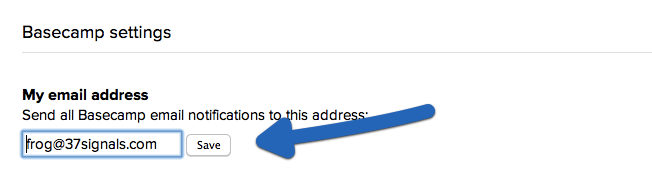
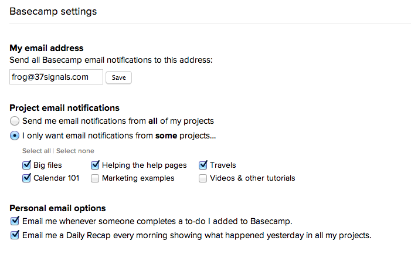

Quick question? Get fast answers on Twitter.
Tweet a question to @37signals for a quick answer between – Mon–Fri.
Basecamp notifications help you stay on top of what's going on in your projects.
By default, Basecamp sends notifications to the email you use for your ID. You can send notifications to another address. Very helpful if you're a member of multiple accounts!
To update your notification email address, click Me, then click "My Basecamp Settings."

Add your new address. Basecamp will send all the notifications for this account to the new address. 
You might not want to be notified about every single project in your account. To avoid being bombarded by email overload, you can select which projects send you email throughout the day. You can also sign up for the Daily Recap, an email summary of all the activity in your projects. And there's an option to opt out of notifications when someone completes a task you assigned.
Choose which projects can send you email notifications. 
If you stop receiving email notifications for a project, there are a few places you can check.
Next help article: Your time zone →
Tweet a question to @37signals for a quick answer between – Mon–Fri.
For in-depth questions, you can file a support ticket to get answered personally by us.